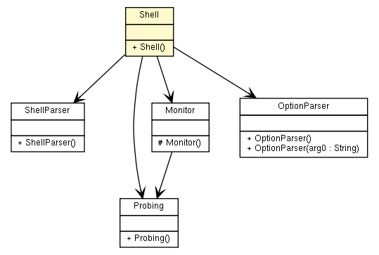

fr.univrennes1.cri.jtacl.shell
Class Shell

java.lang.Object
 fr.univrennes1.cri.jtacl.shell.Shell
fr.univrennes1.cri.jtacl.shell.Shell
public class Shell
- extends java.lang.Object
- Author:
- Patrick Lamaiziere
|
Constructor Summary |
Shell()
|
| Methods inherited from class java.lang.Object |
clone, equals, finalize, getClass, hashCode, notify, notifyAll, toString, wait, wait, wait |
_prompt
protected java.lang.String _prompt
_parser
protected ShellParser _parser
_monitor
protected Monitor _monitor
_optParser
protected joptsimple.OptionParser _optParser
_interactiveMode
protected boolean _interactiveMode
_testMode
protected boolean _testMode
_verbose
protected boolean _verbose
_lastProbing
protected Probing _lastProbing
_testResult
protected boolean _testResult
EXIT_SUCCESS
public static final int EXIT_SUCCESS
- See Also:
- Constant Field Values
EXIT_FAILURE
public static final int EXIT_FAILURE
- See Also:
- Constant Field Values
EXIT_ERROR
public static final int EXIT_ERROR
- See Also:
- Constant Field Values
Shell
public Shell()
getIfaceLinksByEquipmentSpec
protected IfaceLinks getIfaceLinksByEquipmentSpec(IPNet sourceIP,
java.lang.String EquipmentSpecification)
- Returns all the
IfaceLink links matching an 'equipment specification'
string.
The format of the 'equipment specification' string is:
equipment-name'|'[iface-name|IPaddress]
- Parameters:
EquipmentSpec - Equipment specification used to filter.
- Returns:
- a
ifaceLinks list containing the links.
substitute
protected java.lang.String substitute(java.lang.String line)
helpCommand
public void helpCommand(ShellParser command)
optionCommand
public void optionCommand(ShellParser command)
defineCommand
public void defineCommand(ShellParser command)
topologyCommand
public void topologyCommand(ShellParser command)
routeCommand
public void routeCommand(ShellParser command)
probeCommand
public boolean probeCommand(ShellParser command)
parseShellCommand
public void parseShellCommand(java.lang.String commandLine)
printUsage
protected void printUsage()
runCommand
public void runCommand(java.lang.String commandLine)
runFromFile
public void runFromFile(java.lang.String fileName)
run
public void run(java.lang.String[] args)
Copyright © 2010. All Rights Reserved.